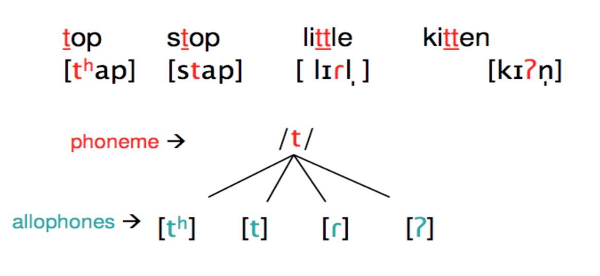
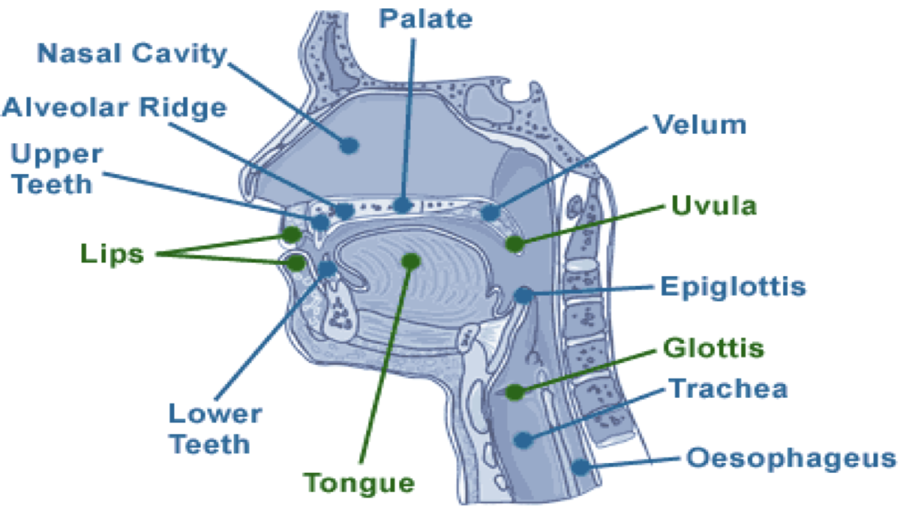
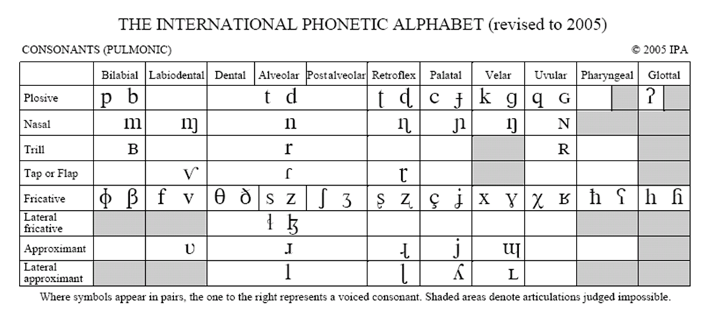
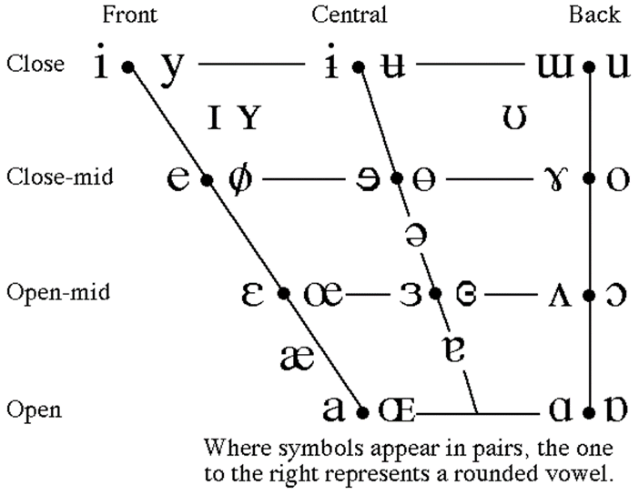

Phonetics
Phonetics is the study of human speech sounds, how they’re produced, transmitted and received. Phonetic transcription focuses on the precise way in which a sound is produced by a particular speaker on a particular occasion, but is not related to any particular language.
- We refer to individual sounds as phones or sounds, never letters
- There are two kinds of transcriptions using the IPA; broad and narrow
- All broad (general or phonemic) transcriptions is done with phonetic slashes /si/
- All narrow (phonetic) transcription is done within phonetic brackets: [si]
Questions:
What are the two kinds of transcriptions using the IPA? :: There are two kinds of transcriptions using the IPA; broad and narrow.
Fields#card
Articulatory Phonetics
How sounds are produced
Acoustic Phonetics
Physical properties of sounds
Auditory Phonetics
How sounds are perceived
Transcription
Transcription aims to create a system of one-to-one sound-symbol correspondence, which is not necessarily the case with spelling.
Examples of transcription:
- Next: /nɛkst/
- Chin: /tʃɪn/
- Lamb: /læm/
- Kite: /kaɪt/
- Cat: /kæt/
- Meet: /miːt/
A rough-coated, dough-faced, thoughtful ploughman strode through the streets of Scarborough. After falling into a slough, coughed and hiccoughed.
/ə ɹuf-kəʊted, dəʊ-feɪsd, θɔːtfʊl plaʊmɘn strɵʊd θruː ðə striːts ɒf skɑːbrə. ɑːftə fɔːlɪŋ ɪntuː ə slaʊ, kɑft and hɪkʌpt/
The International Phonetic Alphabet
The IPA is an international alphabet that can transcribe any of the world’s languages.
- In IPA transcription, one phone (IPA symbol) usually equals one sounds
Allophones#card
What is an allophone? :: Allophones are more specific interpretations of a phoneme, made for narrow transcriptions. ^1677146865719 
Place + Manner
Place of Articulation#card
Where the sound is made 
Consonants
 The top is the place and the and the left is the manner
Vowels

Manner of Articulation
How the sound is made
Phonology#card
Phonology is the study of the sound system of a specific language. The sounds of the English language for instance are very different to the sounds of Italian or Mandarin, and the sounds of Australian English differ from those of American English.
- How many sounds in Australian English? :: 44 phonemes
- Each language has different sounds and stresses particular phonemes, and can completely change the meaning of the word (project vs project)
Connected Speech
There are no actual gaps in between words in speech generally, only written.
Elision#card
What is elision? :: The omission (deletion) of a sound in connected speech (sounds are lost) - this sound may be a vowel, a consonant or even a whole syllable. For instance ‘cos instead of pronouncing because. We often elide sounds in rapid, everyday speech purely for ease of pronunciation. Another example would be ‘want to’ vs wanna
Vowel Reduction#card
What is vowel reduction? :: Similar to elision but, instead of disappearing completely, vowels in unstressed positions are reduced to schwa /ə/. So the word ‘to’ /tu/ might be reduced to /tə/
Assimilation#card
What is assimilation? :: When a sound changes to become more like a neighbouring sound. Assimilation may be progressive where the sound is affected by a preceding sounds, or regressive (also known as anticipatory assimilation), where the following sound is affected by a following sound.
Examples
Progressive:
- talked becomes /tɔːkt/
- pens become /penz/ Regressive:
- light blue /laip bluː/
- green boat becomes /griːm bəʊt/
Insertion#card
What is insertion? :: There are two examples of sounds being added, generally deliberately. The first is insertion, the other is epenthesis. Insertion doesn’t add a full syllable, whereas epenthesis does
- a voiceless stop insertion where, between a nasal consonant and a voiceless fricative, a voiceless stop with the same place of articulation as the nasal consonant is inserted.
- e.g. In English, many add a /p/ to hamster and say “hampster”/
- after a nasal consonant, a voiceless stop may be ‘added
- e.g. In English, many add a /k/ to something which becomes /sʌmθɪŋk/
Epenthesis#card
What is epenthesis? :: Epenthesis is the insertion of an extra sound into a word. Epenthesis adds a full extra syllable
- Involves the addition of sounds (syllables) where they don’t strictly belong. For instance, it’s common for people to insert a vowel in ‘souvlaki’ so that it sounds like ‘souv-e-laki’. And humbling sometimes becomes humb-e-ling.
Intrusion#card
What is intrusion? :: This is where sounds are added between words but is not deliberate, but may be put together as insertion. ^1685778838448 When two vowel sounds meet, we tend to insert an extra sound which resembles wither a /j/, /w/ or /r/, to mark the transition sound between the two vowels, a device referred to as intrusion.
- Consonants can also be added, for instance Australians often add r in law and order so that it sounds more like “lor an order”.
Metathesis#card
What is metathesis? :: Metathesis sounds complicated but it’s a very common aspect of the English language. It is the transposition within a word of its sounds. The word “metathesis” comes from the Greek word meaning to transpose. It’s also known as a permutation.
- Ask becomes /arks/
- Nuclear becomes /nucələer/
Prosodic Features#card
Affect how we say something
- Volume is the modulation of volume in your voice, which is used to convey emotions
- Tempo is the speed and which we speak, reasons for speaking faster or slower
- Intonation is the pattern of pitch changes in speech, it is the variation of spoken pitch used in language. It can be used to
- Indicate the different attitudes and emotions of the speaker
- Signal the difference between statements, questions.
- Stress is the degree of strength used to pronounce a syllable
Non-verbal features do not affect the features of speech, while paralinguistic features (cough, laugh, breath, aka vocal effects) do impact my speech, meaning you can still hear them.
Phonological Patterning#card
- Alliteration: seven slippery snakes
- Assonance: he claps his hands and puts them in the sand
- Consonance: Mike likes his new bike
- Onomatopoeia: boom, crash, brrrrrr
- Rhythm: I’m going down like a bottle of whiskey
- Rhyme: The cat and the hat, sat on a mat